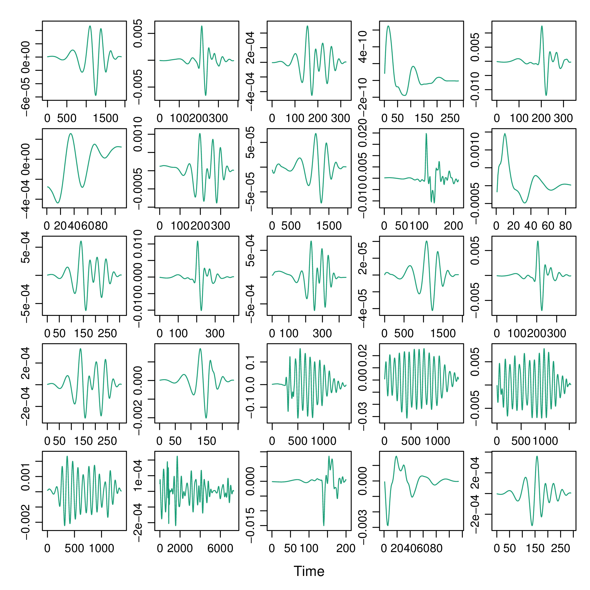
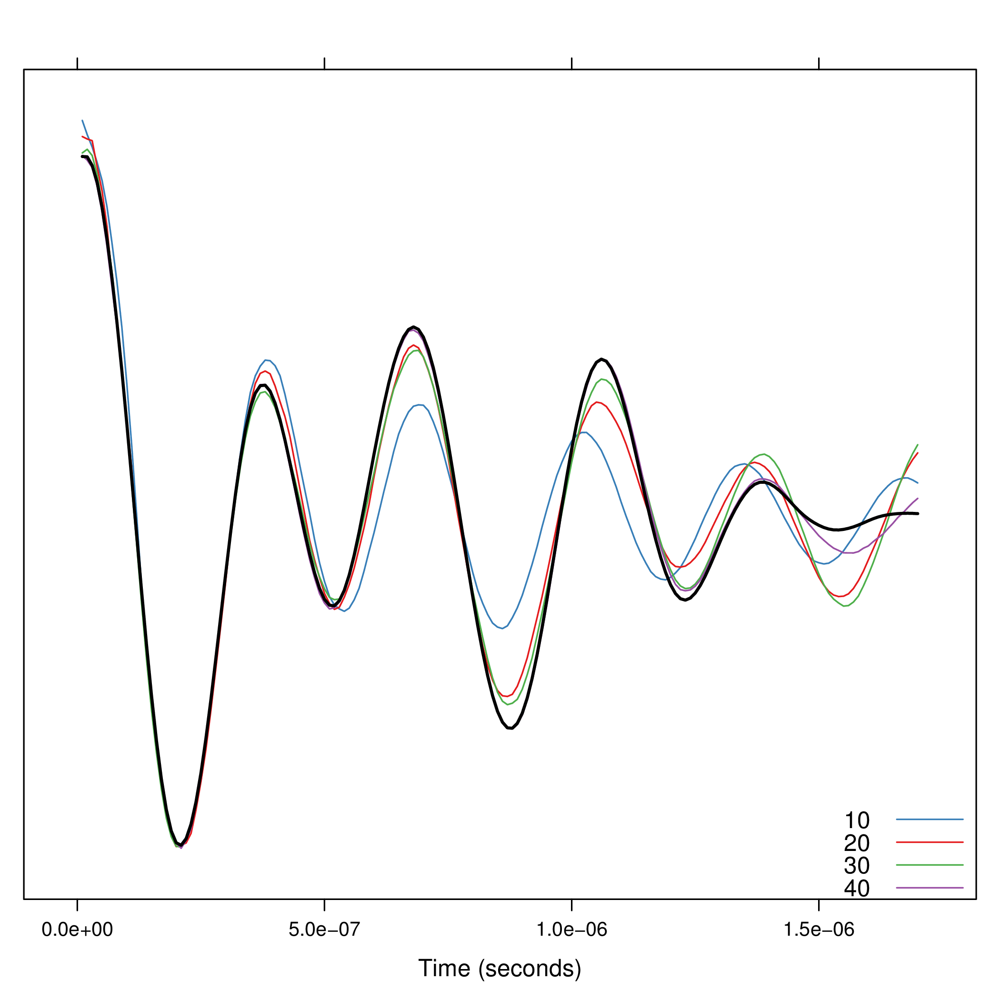
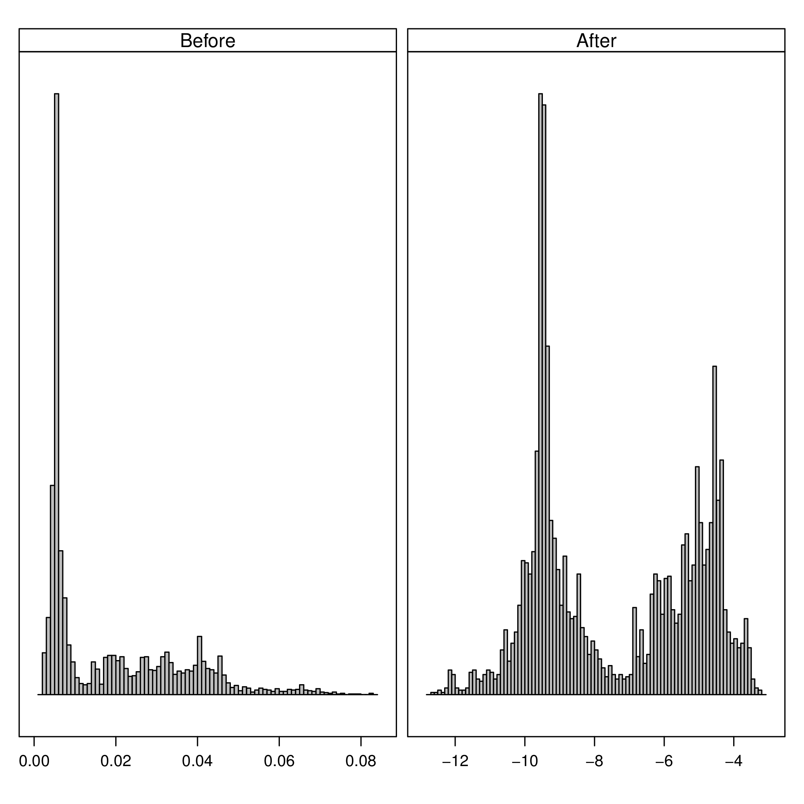
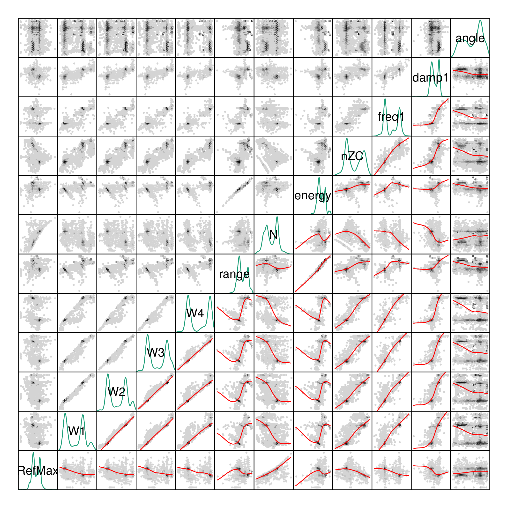
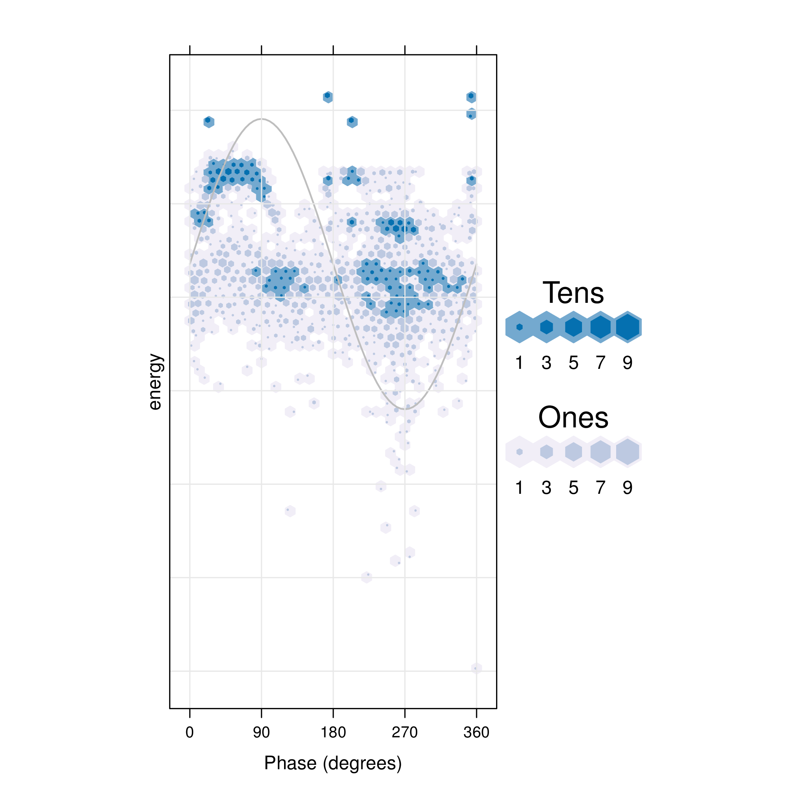
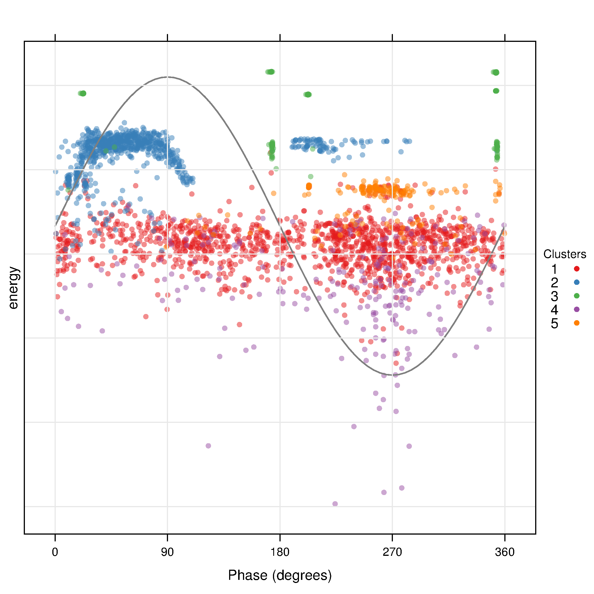
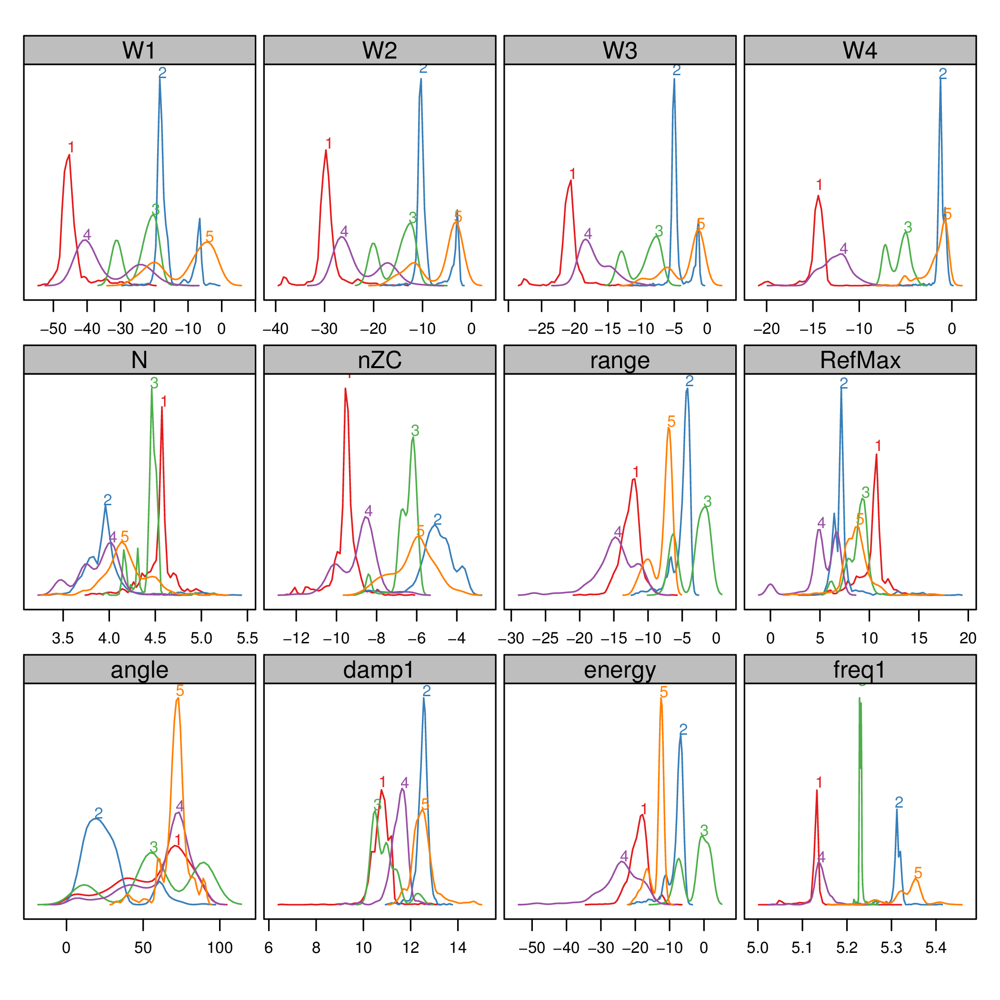

pdCluster: Partial Discharges Clustering
Partial discharge measurements analysis may determine the existence of defects. This package provides several tools for feature generation, exploratory graphical analysis, clustering and variable importance quantification for partial discharge signals.
The development pages of pdCluster are here.
It can be installed with:
install.packages("pdCluster", repos="http://R-Forge.R-project.org") install.packages(c("hexbin", "RColorBrewer"))
Along this webpage you will find some examples using some real datasets.
library(pdCluster)
Table of Contents
1 The Prony's method
A clean partial discharge signal can be regarded as a finite combination of damped complex exponentials. Under this assumption, the so-called Prony's method allows for the estimation of frequency, amplitude, phase and damping components of the signal.
We have a collection of signals in a list named signalList
(download).
load('signalList.RData')
The signals contain zeros at the beginning and at the
end. The no0 function can remove these parts.
xyplot(signalList, y.same=NA, FUN=function(x){xyplot(ts(no0(x)))})

With these cleaned signals the Prony's method can provide their components.
signal <- signalList[[3]] pr <- prony(signal, M=10) xyplot(pr)
Since the number of components must be fixed \a priori\,
the function compProny allows the comparison of different numbers:
compProny(signal, M=c(10, 20, 30, 40))

2 Feature generation
pdCluster includes several functions for feature
generation. The analysis function comprises all of them. The
results for our example signal are:
analysis(signal)
This function can be used with a list of signals in order to obtain a matrix of features:
analysisList <- lapply(signalList[1:10], analysis) pdData <- do.call(rbind, analysisList)
Now we need the angle and reflection information, available from
another different dataset (named pdSummary, download).
load('pdSummary.RData')
In order to safely share the information, both data frames must be reordered by their energy values:
idxOrderSummary=order(pdSummary$sumaCuadrados) idxOrderData=order(pdData$energy) pdDataOrdered=cbind(pdData[idxOrderData,], pdSummary[idxOrderSummary,c('angulo', 'separacionOriginal')])
Later, the data frame to be used with the clustering algorithm has to
ordered by time. Thus the samples of the clara method will
be random.
idx <- do.call(order, pdSummary[idxOrderSummary, c('segundo', 'inicio')]) pdDataOrdered <- pdDataOrdered[idx,]
We can now construct a PD object. (The
pdCluster package is designed with S4 classes and
methods. Two classes have been defined: PD and PDCluster).
pd <- df2PD(pdDataOrdered)
The results of analysis to the whole dataset are available here.
load('dfHibr.RData') dfHibr <- df2PD(dfHibr)
3 Transformations
Prior to the clustering algorithm, the feature matrix has to be filtered:
dfFilter <- filterPD(dfHibr)
and transformed:
dfTrans <- transformPD(dfFilter)
The next figure compares the datasets after and before of the transformations:
nZCbefore <- as.data.frame(dfFilter)$nZC nZCafter <- as.data.frame(dfTrans)$nZC comp <- data.frame(After=nZCafter, Before=nZCbefore)
h <- histogram(~After+Before, data=comp, scales=list(x=list(relation='free'), y=list(relation='free', draw=FALSE)), breaks=100, col='gray', xlab='', strip.names=c(TRUE, TRUE), bg='gray', fg='darkblue')

The filterPD method is a wrapper for the general
subset method. With subset it is possible to extract
a group of samples based on a condition and select only certain
columns.
dfTransSubset <- subset(dfTrans,
subset=(angle >= 90 & angle <=180),
select=c(energy, W1, nZC))
dfTransSubset
4 Graphical tools
The pdCluster packages includes a set of graphical exploratory
tools, such as a scatterplot matrices with hexagonal binning, density
plots histograms or phase resolved partial discharge patterns, both
with partial transparency or hexagonal binning.
splom(dfTrans)

densityplot(dfTrans)
histogram(dfTrans)
xyplot(dfTrans)
hexbinplot(dfTrans)

5 Clustering
The filtered and transformed object can now be used with the clustering algorithm. The results are displayed with a phase resolved pattern with clusters in separate panels in the . The colors encode the distance of each point to the medoid of its cluster. The displays the same pattern with superposed clusters. Here the colors encode the membership to a certain cluster, and transparency is used to denote density of points in a region.
The results can be easily understood with the density plots of each cluster and feature or with the histograms .
dfTransCluster <- claraPD(dfTrans, noise.level=0.7, noise.rm=TRUE)
xyplot(dfTransCluster)
xyplot(dfTransCluster, panelClust=FALSE)

histogram(dfTransCluster)
densityplot(dfTransCluster)
